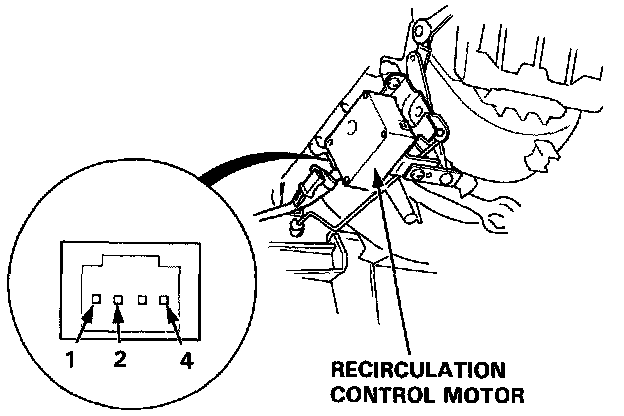

Component Test

1. Connect battery power to the No. 1 terminal of the recirculation control motor and connect ground to the No.2 and No. 4 terminals; the recirculation control motor should run smoothly.
2. Disconnect ground from No. 2 or No. 4 terminal; the recirculation control motor should stop at FRESH or RECIRCULATE.
CAUTION: Never connect the battery in the opposite direction, or damage will result to the recirculation control motor.
NOTE: Don't cycle the recirculation control motor for a long time.
3. If the recirculation control motor does not run in step 1, remove it, and check the recirculation control linkage and doors for smooth movement. If the recirculation control linkage and doors move smoothly, replace the recirculation control motor.